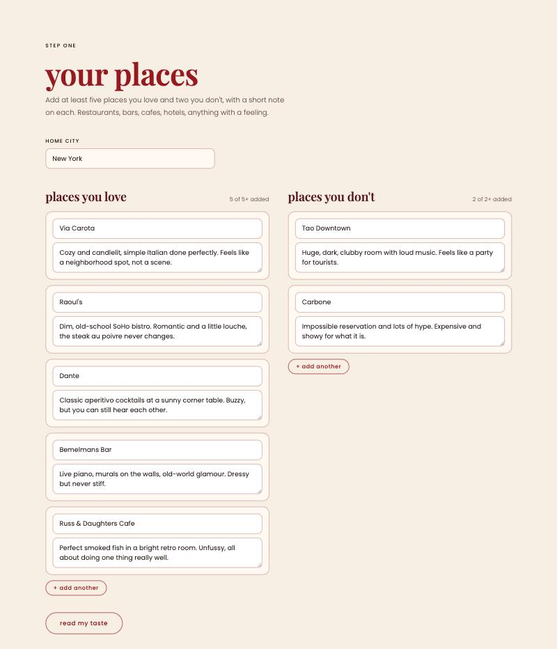
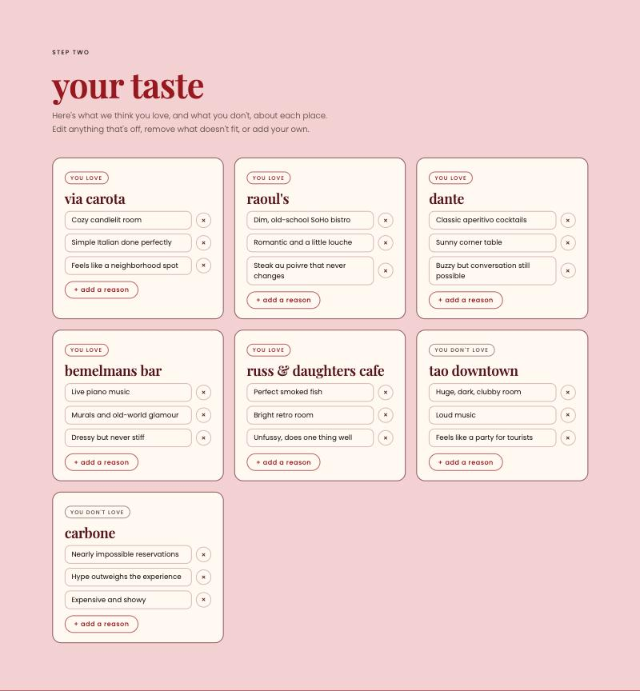
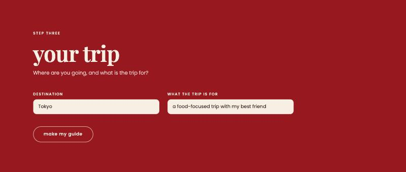
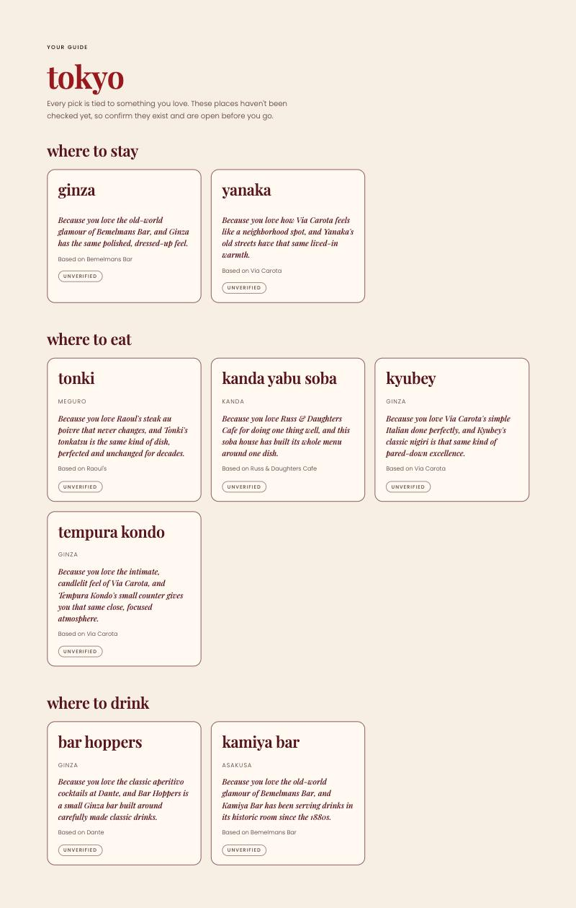

NYU Stern · Building with AI · Fall 2026
Same taste, new city.
Taste Passport turns the places you love at home into a travel profile. It learns what you love and dislike about each place and uses that to recommend where to stay, eat, drink, shop and explore in a new city. Traveling with others? Friends can add their own taste through a link, and the guide adapts to everyone on the trip.
Planning where to eat, drink and stay in a new city takes hours and still feels like guesswork. Recommendations are scattered across Google, TikTok, Instagram, blogs and friends' texts, and almost all of them are generic. They tell you what's popular, not what you would like.
Most people already know their taste well. They have go-to spots at home and could explain what they love about each one. But nothing carries that knowledge to a new city, so every trip starts from zero. On top of that, traveling with others makes it harder. Everyone has different tastes, budgets and dealbreakers, and the planning usually falls on one person in a long group chat.
My primary user is me, an NYC-based MBA student who travels often and has strong opinions about where I eat, drink and stay.
I'll test with a group of 5 to 10 people I can easily reach throughout my build, including Stern MBA classmates and college friends. The group spans different age ranges and travel styles, so I can see whether the taste matching works beyond people like me.
It takes hours, the results are generic, and at least one meal usually ends up at a tourist trap or an overhyped spot.
It takes minutes, and every pick feels like it could be one of my own go-to spots.
| Not building | Why |
|---|---|
| Member accounts | For now, friends join a trip through a share link and add their own favorites and dislikes. Inviting members with their own accounts would need logins and a user database, which adds a lot of complexity without changing what the product does at this stage. |
| Google Maps import and map view | Importing saved places and showing picks on a map would make the app easier to use, but neither is needed to test whether the taste matching works. |
| Booking, reservations and itineraries | Every travel app already competes on logistics. The value here is taste, and picks can link out to book. |
Each tester tries two cities they know well, so they can judge the picks. I'll consider it working if at least 7 out of 10 picks are places they'd actually go.
I'll also check whether the app understands why people love their places. Most of the reasons it pulls out should be kept without edits, and testers should feel the explanations sound like them.
Riskiest assumption. A short note about a favorite place gives the app enough to understand why someone loves it, in a way that carries over to a different city. The first version is designed to test exactly that.
Status: Build 1 local prototype. Runs on my laptop with Claude Haiku 5.5 through OpenRouter.
The first slice of the core workflow works end to end: add 5+ favorite and 2+ disliked places with a note on each, review and edit what the AI thinks I love or dislike about each one, enter a destination and trip purpose, and get a guide with 1–2 neighborhoods, 3–5 places to eat and 2–3 places to drink. Every pick is tied to a specific favorite and marked unverified.




Build on at least two separate days each week outside class, including the November 3 break. Push commits and log actual progress, failures, PRD changes, costs, and hours here. All build deadlines are noon, New York time.